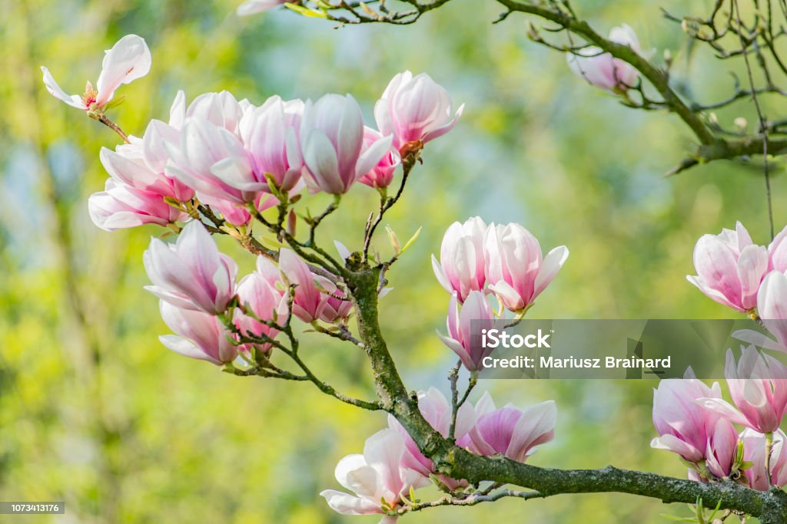
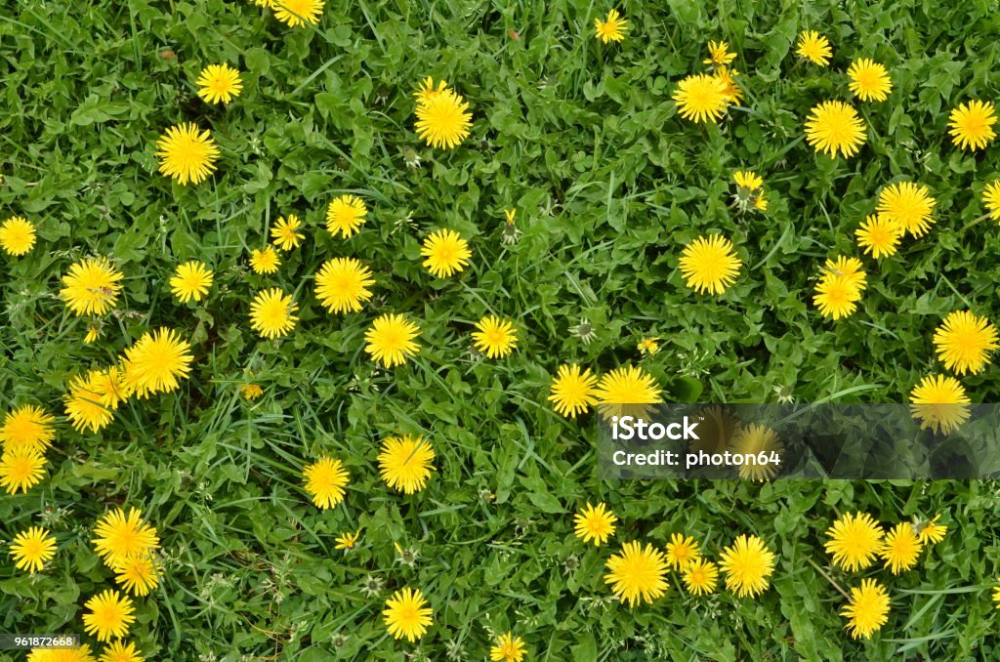
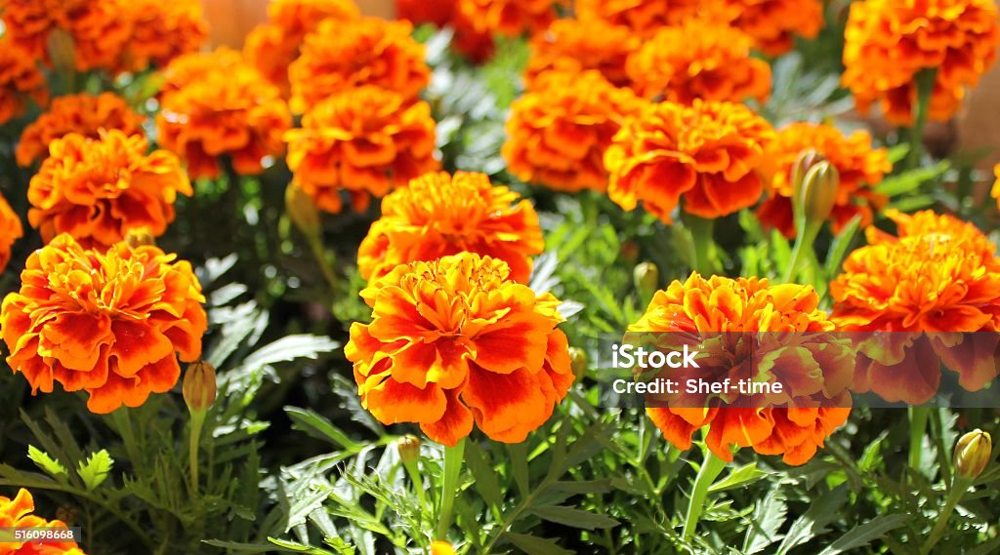
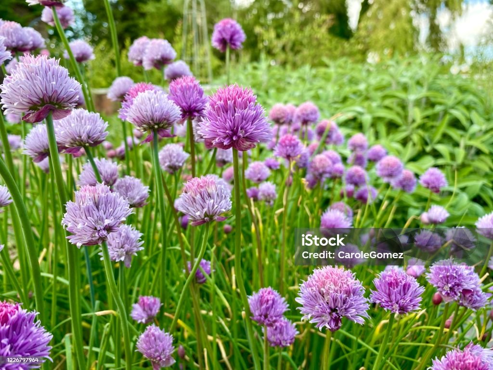

Edible Flowers
Is it Safe?
There is always risk associated with foraging.
You should ensure to properly identify, clean, and prepare any flowers you intend to eat.
What Should I Bring?
Bring a paper bag or a basket, gloves, pruning shears, and a field guide for identifying edible flowers.
This guide can be as simple as a reference guide on your cell phone!
How Do I Start?
You've already started! Research is the first step to identify flowers in your area.
Select a few to keep an eye out for, or research in your area the best places to gather.
Remember to always forage sustainably and ethically!
Magnolias

Magnolias are one of the oldest flowering plants, dating back over 95 million years!They were originally pollinated by beetles rather than bees, which is why their flowers are so large and sturdy.
Magnolias can be found in many parts of the world, including Asia, the Americas, and the West Indies.
The flowers have a subtle ginger flavor and can be used in both sweet and savory dishes.
Dandelions

Dandelions are a common wildflower found in many parts of the world.They are known for their bright yellow flowers and fluffy seed heads.
Dandelion flowers have a slightly bitter, earthy flavor and are often used in salads, teas, and fritters.
Each part of a dandelion is edible, from the flowers to the leaves and roots.
They are also rich in vitamins A, C, and K, as well as minerals like iron and calcium.
Marigolds

Marigolds are vibrant flowers that come in shades of yellow, orange, and red.They are commonly used in gardens for their pest-repellent properties.
Marigold petals have a citrusy, slightly spicy flavor and can be used to add color and flavor to salads, soups, and rice dishes.
Chive Blossoms

Chive blossoms are the purple flowers that bloom on chive plants.They have a mild onion flavor and can be used to garnish salads, soups, and dips.
The blossoms can also be infused into vinegar or used to make flavored butters.